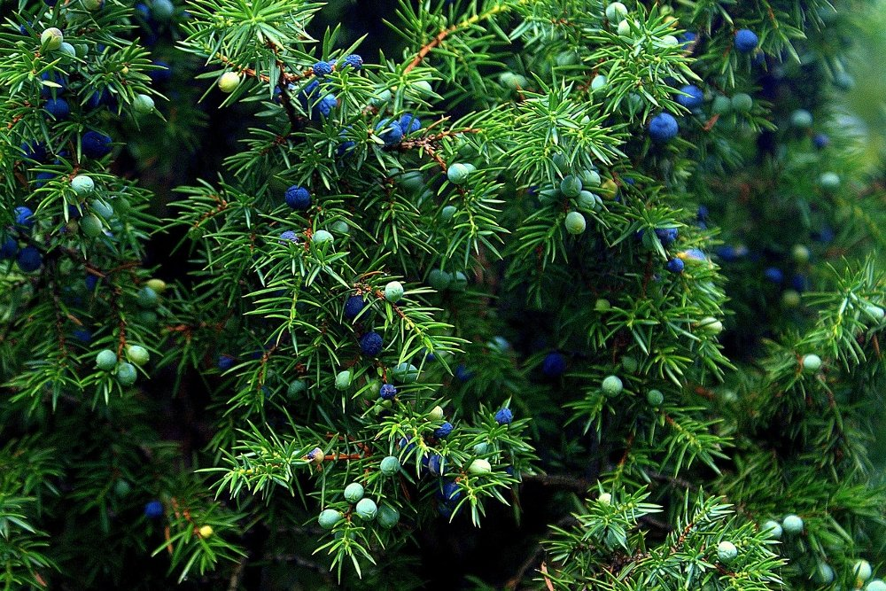

Video-presentacion Avila
Si el video no se reproduce correctamente pulse aqui
- Localizacion
- Localidades principales
- Geografia de la provincia
- Historia
- Cultura
- Naturaleza
- Tradiciones
- Otros aspectos de interes
LOCALIZACION
Está situada al sur de la comunidad autónoma de Castilla y León. Limita con las provincias de Madrid, Toledo (Castilla-La Mancha) y Cáceres (Extremadura), aparte de con las provincias castellano y leonesas de Salamanca, Segovia y Valladolid
Mapa
Si el mapa superior no funciona haga click aqui
Ir arriba
LOCALIDADES PRINCIPALES
- Ávila ---> 57 657 habitantes
- Arévalo ---> 8069 habitantes
- Arenas de San Pedro ---> 6454 habitantes
- Las Navas del Marqués ---> 5139 habitantes
- Candeleda ---> 4998 habitantes
- Sotillo de la Adrada ---> 4542 habitantes
- El Tiemblo ---> 4097 habitantes
- Cebreros ---> 3056 habitantes
- La Adrada ---> 2517 habitantes
- El Barco de Ávila ---> 2368 habitantes
- El Hoyo de Pinares ---> 2164 habitantes
- Piedralaves ---> 2057 habitantes
- El Barraco ---> 1889 habitantes
- Navaluenga ---> 1878 habitantes
- Piedrahíta ---> 1811 habitantes
- Madrigal de las Altas Torres ---> 1440 habitantes
- Casavieja ---> 1429 habitantes
- Burgohondo ---> 1196 habitantes
- Mombeltrán ---> 1006 habitantes
- El Arenal ---> 972 habitantes
Ir arriba
GEOGRAFIA
Es la provincia de mayor altitud en promedio de España, con una altura media de 1131,8 m. Se distinguen tres grandes regiones:
La zona norte, continuación de la Meseta Norte y del valle del Duero, caracterizada por un paisaje llano con suelos formados por materiales sedimentarios. Comprende la comarca de La Moraña.
La zona central donde se localizan el Valle de Amblés, el del Corneja y las zonas de montaña (sierra de Gredos, sierra de Béjar, sierra de Villafranca, La Serrota, sierra de la Paramera, sierra de Ávila o la sierra de Malagón) presenta ingentes formaciones graníticas que alcanzan su mayor altitud en el Pico del Moro Almanzor, que con 2592m es la cumbre culminante de la sierra de Gredos y la más elevada de todo el Sistema Central. Su clima de montaña se caracteriza por temperaturas muy bajas en el periodo invernal y veranos cortos y no muy calurosos.
La zona al sur del Sistema Central que comprende la parte abulense del valle del Tiétar está caracterizada por su menor altitud y un clima más cálido. En esta parte es fácil encontrar naranjos, olivos y palmeras en los principales pueblos.
CLIMA
En Ávila, los veranos son cortos, calurosos y mayormente despejados; los inviernos son muy frío y parcialmente nublados y está seco durante todo el año. Durante el transcurso del año, la temperatura generalmente varía de -1 °C a 29 °C y rara vez baja a menos de -6 °C o sube a más de 33 °C.
La temporada templada dura 2,8 meses, del 15 de junio al 10 de septiembre, y la temperatura máxima promedio diaria es más de 24 °C. El mes más cálido del año en Ávila es julio, con una temperatura máxima promedio de 28 °C y mínima de 13 °C.
La temporada fría dura 3,7 meses, del 15 de noviembre al 5 de marzo, y la temperatura máxima promedio diaria es menos de 11 °C. El mes más frío del año en Ávila es enero, con una temperatura mínima promedio de -1 °C y máxima de 7 °C.
Si el widget superior no funciona haga click aqui
Ir arriba
HISTORIA
PERIODO PRERROMANO:
Antes de la llegada de los romanos el territorio Aviles estaba ocupado por los vetones, una parte también era ocupada por los vacceos. La mayor parte de la población se concentraba en la parte central del territorio.
Los vetones crearon grandes poblados fortificados situados en las elevaciones del terreno, algunos de ellos fueron El Raso, Las Cogotas, el Castro de la Mesa de Miranda, el Castro de la Era de los Moros o Ulaca. El castro de mayores dimensiones e importancia se cree que fue el Castro de Ulaca. Se estima que su población era de unos 5900 habitantes. Los estudios de los ajuares funerarios apuntan que era una sociedad vetona jerarquizada y piramidal, que estaría dominada por una élite militar, y en cuyo escalón más bajo no se descarta que hubiera podido haber quizás algunos esclavos. La base económica de los vetones fue la ganadería, en la que probablemente destacaría el ganado vacuno, con un papel secundario del ganado porcino, caprino y ovino. Debido a que el territorio no disfrutaba de las mejores condiciones para el aprovechamiento agrícola, la agricultura quedó relegada a un segundo plano en cuanto a importancia. La caza se debió ver beneficiada por la buena calidad del territorio, mientras que la recolección de bellotas, castañas o nueces debió de tener una notable importancia en la dieta de los vetones.
Los vetones erigieron un gran número de esculturas de piedra en el territorio de la actual provincia, los denominados verracos. Aunque también se encuentran en zonas que correspondían a otros pueblos prerromanos de la península ibérica, los hallazgos se corresponden principalmente a zonas vetonas. Sólo en la provincia de Ávila se ha encontrado más 43 % del total de ejemplares documentados. Su función es discutida todavía hoy en día, bien pudieron tener una función relacionada con ritos funerarios, de indicadores de cañadas ganaderas, de delimitación de territorios, de protectores del ganado o quizás serían estatuas a las que se otorgaba un papel mágico relacionado con la fertilidad.
PERIODO ROMANO:
En 192a. C. los vetones, en alianza con vacceos y celtíberos, fueron derrotados por tropas romanas comandadas por Marco Fulvio Nobilior en Toledo, que en el 193 a. C. tomó la ciudad. Se considera probable que las fuerzas vetonas correspondieran a las tribus más orientales, que habitaban el actual territorio de la provincia. No existen fuentes escritas que mencionen a los vetones significativamente entre este suceso y el comienzo de las Guerras Lusitanas en el 155 a.C. Durante este último conflicto, los vetones se unieron al grueso de las fuerzas de los lusitanos liderados por Púnico. Los académicos opinan mayoritariamente que este apoyo vetón debió mantenerse hasta el final de la guerra.
Augusto reorganizó las fronteras de las provincias de la Hispania Romana. Sin embargo, no debieron modificar sustancialmente la adscripción de la actual provincia de Ávila. Las informaciones contradictorias que referirían el territorio de los vetones tanto a la Citerior como a la Lusitania han llevado a una mayoría de investigadores a concluir que el territorio vetón estaría dividido entre las dos grandes provincias, aunque el territorio de la actual provincia de Ávila habría pertenecido mayoritariamente a Lusitania exceptuando algunas zonas del norte y del este.
Ya en el siglo I a. C., con la romanización del territorio se produjeron cambios en el tipo de población y se favoreció el desarrollo de núcleos en zonas llanas cerca de las redes viarias y el abandono de la mayoría de los castros que todavía existían por entonces, especialmente los más alejados de las calzadas. Ya fuera fundación ex novo o no, la ciudad de Ávila se convierte en este periodo en el único gran núcleo urbano en la zona.
Del periodo tardorromano existe una importante villa romana con su necrópolis adjunta, la llamada villa romana de El Vergel en el término municipal de San Pedro del Arroyo, en concreto al noreste de la localidad, fechada en torno a los siglos III-IV, mientras que, en Niharra, a pocos kilómetros de la ciudad de Ávila, se encuentra otra villa, la de Pared de los Moros.
VISIGODOS:
Durante este periodo es destacable la existencia de una sede episcopal, mencionada en el año 610 en un documento firmado por el obispo Iustiniano. En el plano arqueológico son reseñables los yacimientos de Los Corralillos y de Solosancho, en los que se encontraron tumbas, construcciones, objetos de adorno, pizarras, cerámica y restos de arneses.
La muestra arqueológica más característica de la época visigoda en la provincia son las pizarras, encontradas principalmente en Diego Álvaro, pero también en Arevalillo, Cabezas del Villar, Chamartín y Solosancho. Otras piezas aisladas han sido halladas también en Cardeñosa (una patena), Arevalillo y San Miguel de Serrezuela (restos cerámicos), Adanero (un jarro litúrgico) y Candeleda (monedas).
AL-ANDALUS-RECONQUISTA:
Tras consolidarse la reconquista en las extremaduras castellanas a partir de la toma de Toledo en 1085, el territorio del Obispado de Ávila se va conformando de tal modo que establece el Territorio histórico de Ávila desde la Edad Media hasta la Edad Moderna.
EDAD MODERNA:
En el siglo XVI en el territorio de la actual provincia se contabilizaba un total de 18 comunidades de villa y tierra: La Adrada, La Horcajada, Arenas, Arévalo, Ávila, El Barco, Bohoyo, Bonilla de la Sierra, Candeleda, Madrigal, El Mirón, Mombeltrán, Las Navas, Piedrahíta, Vahíllo, Villanueva del Campillo, Villafranca de la Sierra y Villatoro.
Con la reordenación administrativa del Conde de Floridablanca de 1785, bajo reinado de Carlos III, Ávila era una de las 31 provincias del reino de España. La provincia estaba a su vez dividida en nueve partidos judiciales: partido de Villatoro (con siete pueblos), partido de Bonilla (con ocho pueblos), partido de Villafranca (con tres pueblos) y los estados de las Navas (con tres pueblos), La Adrada (con siete pueblos), Miranda (con ocho pueblos), Mombeltrán (con doce pueblos), el partido de Ávila, formado por los sexmos de San Juan, Cobaleda, San Vicente, San Pedro, Serrezuela, Santiago y Santo Tomé y el partido de la Villa de Arévalo, formado por los sexmos de Orvita, La Vega, Sinlabajos, Aldeas y Rágama. Además, existían pueblos sueltos o eximidos de sexmo o de Partido.
EDAD CONTEMPORANEA:
A comienzos del siglo XIX se llevó a cabo otra serie de reformas administrativas que afectó a la provincia de Ávila, que cedió a la provincia de Toledo los estados de La Adrada, Mombeltrán, Navamorcuende, Miranda y Oropesa. En el año 1805 todos los municipios del actual partido judicial de Arenas de San Pedro pertenecían administrativamente a la provincia de Toledo.
En 1820 la provincia de Ávila quedó organizada en ocho partidos: Ávila, Arévalo, Madrigal, Peñaranda, Villafranca, Mombeltrán, Navamorcuende y Oropesa. En 1821 se puso en tela de juicio la continuidad de la provincia, sobre la base de su pequeño tamaño. En la reforma de 1822 algunas localidades pertenecientes al partido de Arévalo pasaron a pertenecer a Segovia y a Valladolid, mientras que algunos pueblos del distrito de Villacastín pasaron por contrapartida a pertenecer a Ávila.
En 1833, tras la muerte de Fernando VII, el país vuelve a sufrir una nueva reordenación provincial, llevada a cabo por el ministro de Fomento Javier de Burgos. En dicha división se fijó la mayor parte de los límites actuales de las provincias en España. La provincia de Ávila queda dividida en seis partidos: Ávila, Barco de Ávila, Arenas de San Pedro, Piedrahíta, Arévalo y Cebreros. Asimismo, quedó encuadrada en la región de Castilla la Vieja, una de las dos regiones clasificatorias en que fue dividida Castilla, junto a Santander, Burgos, Logroño, Soria, Segovia, Valladolid y Palencia.
El territorio de la provincia se vio perjudicado por la ocupación francesa durante la Guerra de Independencia. Durante la Primera Guerra Carlista también fueron frecuentes las partidas de carlistas; una de ellas saqueó Candeleda en 1836. La agricultura y la ganadería eran la base de la economía. El sector industrial tenía poca importancia en el siglo XIX. Es de reseñar la existencia de dos modelos productivos: en el norte un monocultivo cerealista, capaz de producir excedentes en buenos años, pero más expuesto a la miseria y hambruna de la población durante las crisis y en el sur un aprovechamiento más variado del sector agrario-ganadero, menos expuesto a las hambrunas periódicas, pero también con menos capacidad para crear excedentes.
Durante el régimen de la Restauración, la provincia se dividía en cuatro distritos uninominales para las elecciones a Cortes: Arenas de San Pedro, Arévalo, Ávila y Piedrahíta. Los escaños de dos de los cuatro distritos (Arenas de San Pedro y Piedrahíta) fueron principalmente copados por la familia Silvela.
No sería hasta 1965 cuando la provincia de Ávila adoptaría el número de partidos judiciales existentes en la actualidad, los partidos de Arévalo, Arenas de San Pedro, Ávila y Piedrahíta. Esta demarcación quedaría fijada definitivamente por la Ley de Demarcación y de planta Judicial el 28 de diciembre de 1988.
Ir arriba
CULTURA
MUSEOS
El principal museo de la ciudad es el Museo de Ávila, inaugurado en 1911. En el año 1968 adquirió identidad de Museo Provincial.

El museo consta de dos localizaciones: la Casa de los Deanes, un palacio renacentista del siglo XVI que funciona como sede principal y la iglesia de Santo Tomé, levantada originalmente en el siglo XII, que se utiliza como almacén visitable. Las colecciones se engloban en tres grandes secciones: una representativa de la cultura rural de la provincia, otra que recoge piezas halladas en territorio abulense desde la Prehistoria hasta el siglo XIX y finalmente una dedicada exclusivamente a piezas arqueológicas encontradas en excavaciones urbanas de la ciudad de Ávila.
En el interior de la catedral de Ávila está instalado el museo de la Catedral, que alberga una exposición de arte religioso. En el convento de la Encarnación también existe una exposición permanente, que muestra diversos testimonios históricos de Santa Teresa de Jesús así como diversas piezas de arte religioso. También conserva piezas relativa a la vida y obra de San Juan de la Cruz. En la cripta del convento de Santa Teresa se localiza museo de Santa Teresa, que expone la obra y vida de la santa, así como diversas piezas de arte religioso.
En el interior del monasterio de Santo Tomás se mantienen varios museos, como el de Arte Oriental y el de Ciencias Naturales.
El museo de Arte Oriental fue inaugurado en el año 1964, está situado en el tercer claustro del monasterio de Santo Tomás y alberga una colección variada de piezas de Japón, Vietnam, Filipinas y China.
El de Ciencias Naturales alberga una colección de ejemplares zoológicos que formaban parte del antiguo gabinete de historia natural de la orden dominicana del monasterio.
EXPOSICIONES
Existen diversas salas de exposiciones, como la sala del Agua, la sala del Torreón de los Guzmanes, la sala de la Diputación y la sala del Episcopio. Durante el año 2004 la catedral acogió la exposición «Testigos» de la fundación «Las Edades del Hombre», con lo mejor del arte sacro castellanoleonés. Esta exposición se prolongó a lo largo de 223 días y recibió un total de 859859 visitantes. Durante el año 2006 se llevó a cabo la exposición «Las dos orillas», conmemoración del V centenario de la muerte de Cristóbal Colón. Durante el verano se puede acceder a visitas nocturnas a la muralla, que son guiadas y teatralizadas los fines de semana, en las cuales se cuenta parte de la historia de la construcción de las murallas y de la ciudad.
Ir arriba
NATURALEZA
Parque regional de la Sierra de Gredos
Hogar de la cabra hispánica, es además uno de los entornos más interesantes en cuanto a biodiversidad de toda Europa.
Su paisaje montañero se presta a diferentes actividades; la más popular es el senderismo y la ruta que permite alcanzar el Circo de Gredos.
Pero la naturaleza de la sierra da para mucho más, así que podrás realizar recorridos ornitológicos, micológicos o que tengan como centro a la popular cabra montesa así como dar paseos a caballo.
Si quieres añadir más adrenalina a tu escapada, la Sierra de Gredos es el escenario perfecto para el alpinismo, el esquí de travesía o la escalada.

Cuevas del Aguila
Surgidas de ríos subterráneos hace de 500 mil a 1 millón de años (los expertos no terminan de ponerse de acuerdo), estas cuevas tienen una profundidad de 50 metros y un recorrido de 1km. Estratégicamente iluminadas, podrás apreciar el colorido de la roca caliza y sus numerosas estalactitas y estalagmitas.
Aprovecha tu visita a las cuevas, situadas en el Valle del Tiétar, para disfrutar del entorno natural sobre tu cabeza: senderismo, rutas en bicicleta o a caballo es la oferta más común y solicitada de esta zona.

Piscinas naturales de Candeleda
Si visitas el entorno natural de Ávila cuando apriete el calor este será una de las visitas que no puedes perderte. Cualquiera de las piscinas naturales de Candeleda serán el lugar idóneo para pasar un día en familia, disfrutar del ambiente y darte un chapuzón.
Rodeadas de un entorno privilegiado, el Charco Palomas o el Carreras se presentan como una opción ideal al típico turismo de playa en los meses de verano.
El Pinar de Hoyocasero
Encontrarás plantas únicas en el mundo y otras muy raras de ver en la Península Ibérica. Para recorrerlo hay una ruta circular señalizada durante todo el camino y que es perfecta para realizar con niños.
Si lo que buscas es pasar un día en contacto con la naturaleza, no tardes en visitar este especial pinar que encontrarás a apenas 50 minutos de Ávila.
El castañar de El Tiemblo
Muy en la línea del entorno anterior, este castañar es ideal para perderse con niños.Pasamos de pinares y especies únicas a uno de los castañares con más imponentes ejemplares del país.Se trata de un bosque que también puede recorrerse en una ruta circular.
Te toparás con el castaño más famoso del entorno “El Abuelo”. Si puedes, programa tu visita para el otoño. La caída de las hojas y los tonos dorados y marrones que dominan el castañar le terminan de dar el toque mágico que disfrutarán, sobre todo, los más pequeños.

Calzada romana de Puerto del Pico
Es una de las mejores conservadas de España y las vistas que te regala el paisaje merecen el esfuerzo. Hoy en día, aún se sigue usando para la trashumancia con lo que, es posible, la belleza del entorno mejore gracias a que compartas el camino con distintos tipos de ganado.
Parque Megalitico La Guaña
Un paisaje natural totalmente distinto es lo que encontrarás en el Parque Megalítico La Guaña. Lo más impresionante es su dolmen, un Stonehenge en tierras españolas. Además, a sus alrededores hay otras estructuras como un dinosaurio de metal, una tela de araña del mismo material y otros elementos que podrás ir descubriendo por ti mismo.

Rio Arbillas
Otro de los tesoros que deja la Sierra de Gredos es el río Arbillas, este afluente del Tiétar es uno de los lugares favoritos para los amantes del barranquismo.
Sonido Rio Arbillas
Sierras de la Paramera y Serrota
Las sierras de la Paramera y Serrota tienen la consideración de Lugar de Interés Comunitario y cuenta la leyenda que una de sus cuevas, la Cueva del Maragato, sirvió de refugio al bandolero Pedro Piñero, conocido precisamente como Maragato. Es poco transitada, por lo que es un lugar perfecto para realizar alguna ruta de senderismo.
Ir arriba
TRADICIONES
Las fiestas patronales de Ávila son las de Santa Teresa de Jesús, el 15 de octubre, y San Segundo, el 2 de mayo. Las fiestas de verano de la ciudad tienen lugar durante la segunda quincena de julio. También es patrona de Ávila la virgen de Sonsoles.
La Semana Santa en Ávila es considerada como de Interés Turístico Regional desde el año 1993 y como de Interés Turístico Nacional desde el año 2005. Desde 2014 hasta la actualidad es considerada como de Interés Turístico Internacional.
Mercado medieval: Durante el fin de semana posterior al primer viernes de septiembre de cada año tiene lugar un mercado medieval en el casco histórico de la ciudad. Se puede disfrutar de una ambientación, espectáculos y gastronomía propias del medievo. El lema bajo el que se celebra de «El mercado de las tres culturas» está referido a las principales culturas que han estado involucradas en la historia de la ciudad: cristiana, judía y musulmana. Durante esta semana parte de la ciudad y muchos de sus habitantes se visten de época y se llevan a cabo pasacalles y espectáculos durante el día y la noche, en distintas zonas temáticas que cuentan con sus respectivas denominaciones: Barrio judío, Zoco árabe, Campamento militar/Arqueros, Mercaderes cristianos, Campamento medieval, Rincón infantil, Episcopio o Cetrería.
Festival de Teatro de Calle y Artes Circenses. Tiene lugar en temporada veraniega y se llevan a cabo distintos espectáculos callejeros, de froma gratuita.
Arteávila. Se trata de un certamen anual de artesanía. Tiene lugar durante el mes de agosto en el paseo del Rastro y es organizado por la Asociación de Artesanías Varias de Ávila.
E Boca. Muestra de vino y productos de la tierra, está promovida por la Asociación de Sumilleres de Ávila, y en el año 2013 se desarrolló durante el mes de febrero.
Feria del Libro Antiguo y Ocasión. Certamen ferial anual, es organizado por la Asociación del Libro Viejo y Antiguo de Castilla y León. Tiene lugar en la plaza de Italia o en el paseo del Rastro.
Ir arriba
OTROS ASPECTOS DE INTERES
GASTRONOMIA
Son característicos en las mesas abulenses los platos de judías del Barco, el chuletón de Ávila, las patatas revolconas y las yemas de Santa Teresa. También son típicos de la ciudad el hornazo, bollo de pan relleno de chorizo, tocino, lomo y huevo, las mollejas de ternera o el cochinillo (denominado tostón asado), cuchifrito en la capital y al horno en Arévalo.
Yemas de Ávila. Este dulce típico de la ciudad es fabricado en la pastelería tradicional «La Flor de Castilla» con el nombre de «Yemas de Santa Teresa». El resto de las pastelerías de la ciudad también lo fabrican pero bajo la denominación genérica de «Yemas de Ávila» o simplemente «Yemas». Se elaboran como su propio nombre indica a partir de la yema de huevo.
Chuletón de Ávila. Se trata de un gran chuletón de ternera a la parrilla y poco hecho. Se puede disfrutar en cualquier punto hostelero de la ciudad. El chuletón es de ternera Avileña, raza autóctona de ejemplares negros y de excelente carne. La carne de Ávila tiene indicación geográfica protegida.
FAUNA
La elevada altitud de esta Sierra, unida a la mayor continentalidad del clima en los pisos superiores, ha favorecido los fenómenos de aislamiento poblacional y la presencia de especies montañas de tipos fríos cuyos antecedentes espaciales más próximos se encuentran en sistemas montañosos del norte peninsular…, todos estos factores propician la presencia de comunidades faunísticas con un elevado número de taxones endémicos, singulares o de procedencia biogeográfica diversa. Fiel reflejo de ello son las más de 230 especies de vertebrados catalogados, entre las que se encuentran numerosos endemismos peninsulares a nivel específico y cuatro endemismos subespecíficos locales.
El área de distribución de los endemismos locales se sitúa en la zona de cumbres, pertenecen a dos clases de vertebrados: la clase Amphibia, representada por la salamandra del Almanzor y la clase Mammalia, con el topillo nival abulense y la cabra montés. Junto a ellos no se pueden olvidar otras especies como el barbo ibérico, barbo comiza, pardilla, en lo referente a peces. En cuanto a los anfibios y reptiles destaca la presencia de especies como rana de San Antonio, sapo partero, víbora hocicuda, lagarto verdinegro, galápago europeo... Entre la abundante avifauna de Gredos hay que destacar dos especies consideradas en peligro de extinción: el águila imperial y la cigüeña negra, otras seis están consideradas vulnerables: garza imperial, cigüeña común, alimoche, aguilucho cenizo, tórtola y buitre negro.
Los mamíferos son también numerosos: desmán de los Pirineos, musaraña española, musaraña enana, ratilla de Cabrera, nutria, gato montés... dan idea de la riqueza faunística de este Espacio.

FLORA
En la cara Norte el matorral es predominante, ya sea el piornal (Cytisus oromediterraneus) en las cumbres, o la mezcla de leguminosas, a veces con labiadas, brezos o jaras. La escasa vegetación arbórea está constituida principalmente por los pinares de Pinus sylvestris de Navarredonda de Gredos y Hoyos del Espino, así como las manchas diseminadas de rebollo en el valle del Tormes; la encina se presenta predominante en estrato arbustivo y carrascales.
En la cara Sur, por el contrario, abundan los pinares de Pinus pinaster, alternándose con cultivos en terrazas y bancales con cerezos, castaños, higueras y olivos, entre otros árboles. El jaral (Cistus ladanifer) y el brezal (Erica sp.) ocupan grandes extensiones.
Hacia el Oeste, las formaciones claras de rebollo y enebro sobre pedregales erosionados y laderas pronunciadas hablan de la degradación a que se han visto sometidas las masas de bosque marcescente. En las márgenes de todos los cursos de agua se instalan especies ripícolas de un modo testimonial, la especie más común es el sauce, junto a alisos, chopos, álamo negro..., en la parte alta de las gargantas aparecen ejemplares aislados de abedul. Pero el principal valor ecológico de esta Sierra reside en la vegetación rupícola, adaptada a vivir aprovechando los menores resquicios de la roca y soportando las durísimas condiciones ambientales, se han diferenciado especies endémicas de estas áreas como la manzanilla de Gredos (Santolina oblongifolia), la Siderítide de Gredos (Sideritis lurida subsp. borgiae), la estátice de Rivas Martínez (Armeria rivas-martinezii) o el gualdoncillo (Reseda gredensis).
